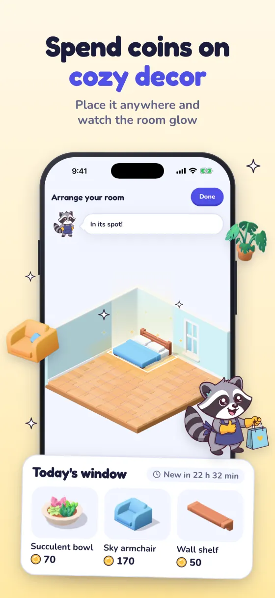

How Rocco works
Rocco is an iPhone app that turns real house chores into a daily habit. You do a tiny real chore of about 2 to 5 minutes, take a photo inside the app, and Rocco checks the photo. When the photo passes, you earn coins, and the coins furnish and grow a cozy virtual home that is yours.
The daily loop, step by step
- Pick a questOpen Quests and pick one tiny real chore from your daily list, such as make the bed or do the dishes. Each quest takes about 2 to 5 minutes.
- Do the real choreDo the chore in your real home. For a tougher chore you can start a timer, which shows on the Lock Screen and in the Dynamic Island.
- Take the photo in the appTake the photo inside the Rocco app. Bed, laundry, dust and trash need one photo. The clothes chair, the dishes and any mess need a before and an after photo.
- Rocco checks the photoRocco checks the photo with an AI service (Google Gemini). If the photo does not pass, Rocco says in one sentence what to fix.
- Coins landWhen the photo passes, the coins for that chore are added to your balance.
- Furnish and grow your homeSpend the coins on furniture and decor, drag the pieces onto the grid of your room, and grow the home from one bedroom to a living room, a kitchen and a bathroom.
 Your small daily list
Your small daily list Before and after photo
Before and after photo
Spending coins on the room A timer for tougher chores
A timer for tougher chores
What counts as a quest in Rocco?
A quest in Rocco is a tiny real chore that takes about 2 to 5 minutes. The six core chores are: make the bed, do the dishes, laundry, clear the clothes chair, take out the trash, and dust.
When you start, you tell Rocco which chores you keep putting off, and Rocco builds your own small daily list from them. On any day you can skip a chore, make it come up less often, or take it off your list.
How does the Rocco photo check work?
Every chore in Rocco is confirmed with a photo taken inside the app. Bed, laundry, dust and trash need one photo. The clothes chair, the dishes and any mess need a before photo and an after photo, and a faint ghost of the before photo helps you match the angle.
The photo is checked by an AI service, Google Gemini. Rocco asks for your permission before the first photo is checked. Photos are checked and then discarded, and Rocco never stores your chore photos. The Privacy Policy has the details.
What if my photo does not pass?
If a photo does not pass, Rocco tells you in one sentence what to fix, for example to get the whole area in the frame. Each chore gets 3 tries a day. Screenshots, photos of screens and repeated photos are not accepted. The Support page has more tips.
Do chores that are not on my list count?
Yes. In Rocco, any real chore that is not on your list also counts, such as ironing, changing the sheets or packing a bag. You take a photo, Rocco names one step you can finish now, and then Rocco checks the after photo. The reward is 20, 35 or 50 coins depending on how big the job is, and you can do up to 3 of these a day.
Rocco also remembers the off-list chores you do. When one is probably due again, Rocco gently asks about it, and you can add it to your list.
What do coins buy in Rocco, and how does the home grow?
Coins in Rocco buy furniture and decor: beds, sofas, armchairs, rugs, lamps, plants, shelves, wall prints, and kitchen and bathroom pieces. You drag pieces onto the grid of your room and can rotate and move them anytime. You can also preview a piece in your own room before you buy it.
- The home grows in steps. It starts as one bedroom that gets bigger, then adds a living room, a kitchen and a bathroom.
- Today's window. Every day, 4 pieces are about 25% off.
- Your own character. You make a character (8 skin tones, hairstyles, hair and eye colors, beards) who lives in the home on its own: cooking, eating, watching TV and sleeping at night.
- Coins are earned, never sold. There are no coin packs and no ads in Rocco. See Pricing.
What happens if I miss a few days?
If you miss 3 days of chores, your room in Rocco gets a little dusty. Nothing is ever lost, and one quest sweeps the dust away. Rocco never judges the mess.
How does Rocco help me keep going?
- Weekly promise. You choose how many days a week you will tidy. Keep the promise and you open a gift box, and a bigger one if you tidy every day. Kept weeks build a streak, and one missed week a month is forgiven.
- Badges. Rocco has 10 badges with 26 tiers (bronze, silver and gold). Their rewards are floors, wallpapers, clothes and furniture that can only be earned, never bought.
- One gentle reminder. Rocco sends at most one gentle note a day, at a time you choose, and stays quiet on days your chores are already done.
- Widgets. Home Screen and Lock Screen widgets show your home, today's progress and your next chore (iOS 17 or later).
- Timer. For tougher chores you can start a timer that shows on the Lock Screen and in the Dynamic Island.
What is Ask Rocco?
Ask Rocco is a chat inside the app for cleaning, tidying and home care questions, such as how to get out a stain or how to clean something, with an optional photo. You can ask up to 15 questions a day. The answers are AI-generated, so test on a hidden spot first. Ask Rocco politely declines topics outside cleaning and home care.
Can I use Rocco with my partner, roommates or friends?
Yes. With the Home plan, up to 6 people share one home in Rocco. Everyone does their own chores, earns their own coins and moves their own furniture, and people invited with a home code do not pay. With friends, you add each other with a friend code ("your street"), visit each other's homes, and leave a sticker or a small gift. You can block and report people.
Want more ideas for sharing the work at home? Read how to split chores fairly, or see all cleaning guides. Questions about price are on Pricing, and quick answers are in the FAQ.
Try Rocco on your iPhone
New subscribers start with a 7-day free trial.